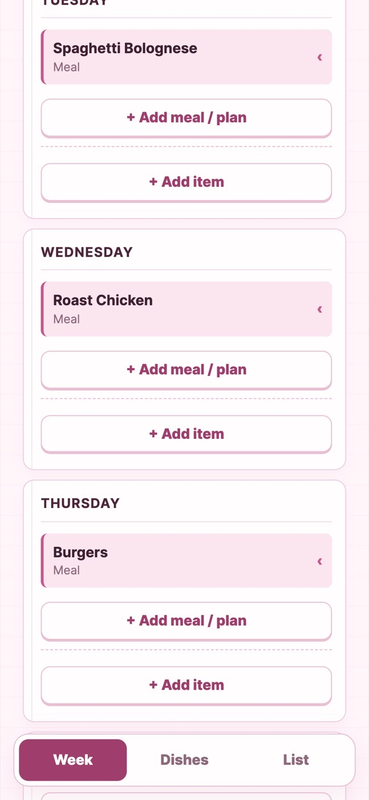
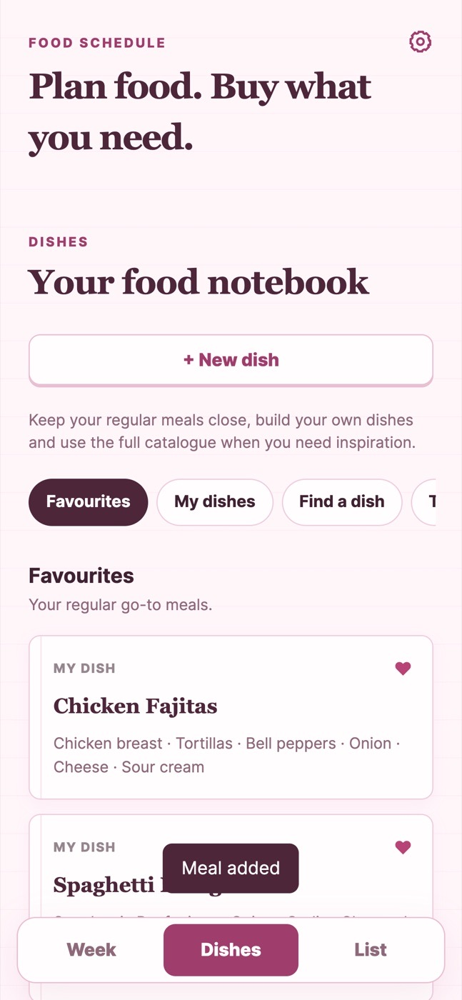
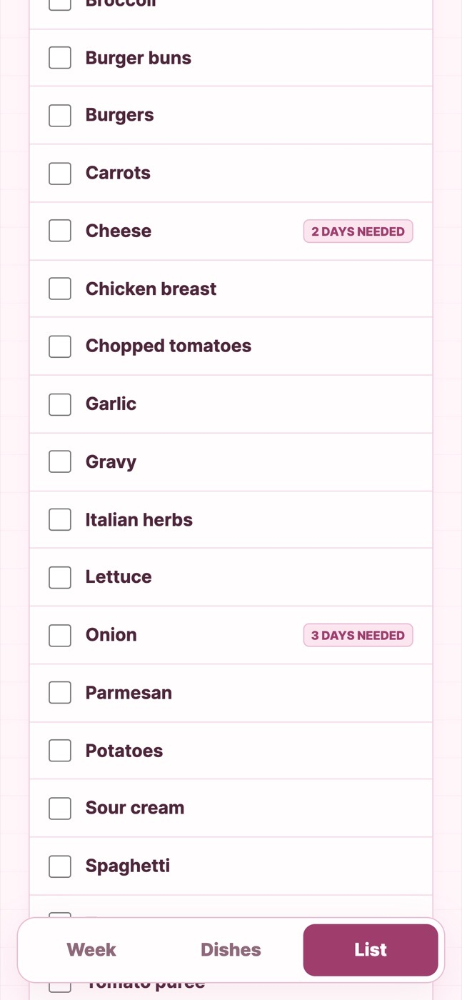

Food Schedule
A food planner built around the shopping list, not recipes.

- Type
- Planning tool
- Built with
- Plain JavaScript, HTML, CSS
- Status
- Working MVP, used personally
- Built
- Entirely from my phone, with ChatGPT
- Dependencies
- None, no build step
The idea
Why I built it
We use a physical weekly planner for our weekly shop, and ours was coming to an end. I had also used an Excel spreadsheet before, which worked but did not look good. So I made an app to replace both.
Most meal planners start with recipes. The thing that actually needs doing each week is knowing what to buy, so this app starts from the shopping list and works backwards: plan the week, and the list writes itself. Recipes, quantities and instructions are left out on purpose.
It is for anyone who wants a simple weekly food planner like the paper ones, but with the meals and ingredients you have added before stored and suggested. Meals break down into ingredients for the shop, and you can add new dishes and ingredients for full control. Once it is set up, the weekly shop is a matter of picking from previous meals instead of thinking from scratch every time.
How it works
The experience, step by step
- Pick dishesSearch a dish library by name or ingredient, or create your own and mark favourites.
- Plan the weekFill Monday to Sunday with dishes, or non-shopping entries like leftovers, takeaway and eating out.
- Add extrasAdd weekly snacks, drinks and any other item.
- ShopGet one deduplicated list, add anything else, tick things off and clear what you bought.
In use
Screenshots



Breakdown
What's inside
Ingredients only, by design
Each dish stores a name and a list of ingredients. No amounts or cooking steps, which keeps the data small and the list simple.
Custom first, seed data optional
Everything is editable, from ingredients to meals. An optional import can pull in extra dishes from TheMealDB, cut down to name and ingredient names, but the app does not depend on it.
Careful ingredient cleaning
Names are trimmed, title-cased and deduplicated within each dish. Merging is deliberately conservative, so different foods are not wrongly combined.
Not everything is a meal
Leftovers, takeaway and eating out sit on the schedule but add nothing to the list.
Small files, one job each
About 110 KB of source with no dependencies, split by feature: dishes, history, extras, shopping, ingredient search.
Stored on the device
Everything persists in the browser using versioned storage keys, with a week history.
Insights
What I learned and decided
The shopping list is the product
Making the list the centre meant cutting recipes, nutrition and scaling. That focus is what keeps the app small and quick to use.
Borrow content, don't depend on it
The external recipe data is only seed content. After import the app stands alone, and only the fields it needs are kept.
Cleaning conservatively beats cleaning cleverly
It is better to leave two similar ingredient names than to merge foods that are genuinely different.
Prove the flow first, then add a server
Local storage let me test the whole plan-to-list journey quickly. The README names the production step: a hosted database with sign-in, separating shared seed dishes from each person's customised versions.
This one began as an experiment: how far could I get an idea to a working app using only my phone? I was out and about with no computer, so I set up the GitHub repository from my phone, planned the app and went through it all in ChatGPT, then asked it to build the app and push everything to Git and GitHub Pages. I tested and used it myself through the chat until it worked, then went through the code once it was done.
The hard part
Edge cases, and building on a phone
Edge cases I had not thought of at the start kept turning up, and the app needed a lot of clean-up. Takeaway and eating out options were needed so a day is not left blank. Non-food items had to be allowed. One-off custom days were needed that change that day's meal without changing the stored one. I also added a tracker for previous weeks.
Building from a phone was harder than expected. With no code to look at, debugging was difficult, and I had to improve my prompting and the way I set up the AI to get better results from it.
I also tried to get food data into it, but there were no good free options. That pushed the app towards being custom-built rather than using pre-made ingredients and meals.
Checking it
How I tested it
Mostly by using it and testing the whole flow by hand, with a lot of user testing and improvements along the way. It has no automated tests yet.
What I left out, and what's next
I left out a comprehensive meal database to keep it lightweight and custom rather than pre-made. The current version is a working prototype that I use myself. Next I want to rebuild it on a stronger foundation for a wider audience.
- Rebuild it with a better setup and tech stack, working with Codex, to suit a wider audience.
- Add automated tests for ingredient cleaning and list generation, the two places where bugs would hurt most.
- Accounts and syncing across devices.